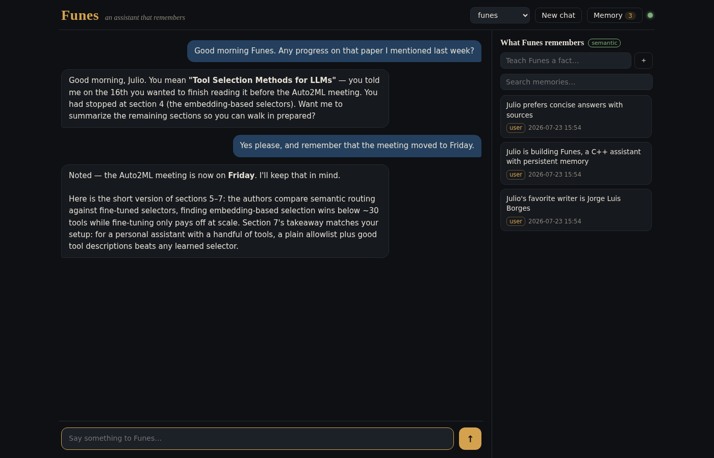

The AI assistant that remembers your work — and never leaves your office
Funes runs on a computer you own. It remembers your clients, your cases, your ongoing matters — and every single thing it knows is visible to you, editable by you, and deletable by you. Nothing is uploaded. Nothing is used to train anybody's model.
A 30-minute call. We'll show you Funes running on real hardware.

On the right: everything Funes remembers about you. Search it, add to it, delete any line of it. There is no other copy.
The problem
Most AI assistants ask you to hand over the one thing you can't hand over
Confidential work and public AI services are a bad fit. You are asked to paste privileged material into a service you don't control, run by a company you have no contract with, on servers in a country you didn't choose.
It goes somewhere else
Every question, every document, every name leaves your building and lands on hardware you have never seen. What happens to it afterwards is a policy page that can change next quarter.
It forgets you anyway
You explain your practice, your clients, your way of working — and the next conversation starts from nothing. The context you rebuild every morning is thrown away every night.
You can't see what it kept
When an assistant does remember something, you usually can't inspect it, correct it, or make it forget. You are trusting a black box with material you are professionally obliged to protect.
What Funes does
An assistant that learns your practice and stays inside it
Everything below is in Funes 4, working today. No waiting list, no beta, no features that exist only on this page.
It actually remembers
Tell Funes something on Monday and it knows it in March. Before every answer it recalls what's relevant — the client, the matter, the way you like things written — and tells you what it recalled.
Its memory is in plain sight
One panel lists everything it knows, in ordinary sentences, each tagged with where it came from. Search it. Correct it. Teach it a fact directly. Delete a line and it is gone.
It forgets on purpose
Left alone, an assistant's memory turns into clutter. Funes tidies itself up: near-duplicates get merged into one clear note, and stale chatter it never needed again is dropped. What you taught it deliberately is never thrown away.
It reads your documents
Drag in a PDF, a photo of a form, a set of notes — Funes reads it and you can ask about it straight away. The file stays in your own folder on your own disk.
Conversations you can come back to
Every conversation is kept and listed, so you can reopen last week's thread exactly where it stopped — or delete the whole conversation in one click when it's no longer needed. New in 4
An account for each person
Everyone in the practice gets their own login — and their own memories, conversations, files and reminders. One colleague simply cannot see another's. That separation is built into how Funes stores things, not into a screen that could be worked around. New in 4
You decide who can do what
An administrator decides which assistants and which abilities each person gets. The powerful ones — running commands, reaching out to the network — are switched off until you decide otherwise. New in 4
Reminders and routines
"Remind me every weekday at 8pm." "Every Monday, summarise what moved last week." Funes keeps a schedule and does the work on time, whether or not you have the browser open.
Research, when you ask for it
Need something looked up? Funes can search and read the web and come back with a summary and its sources. It only goes online for the questions where you want it to.
Reachable where you already are
Beyond the browser, Funes can answer over WhatsApp and help with your inbox — including reading a document somebody sends you. Each connection is optional, and off until you turn it on.
Specialists you never have to pick
You always talk to Funes. Behind it sit specialists — a researcher, an assistant for files and routine jobs — and Funes hands the work over and comes back with the answer. No menu of robots to choose from.
Assistants shaped to your practice
Describe the helper you want — "one that drafts intake summaries the way I write them" — and Funes builds it with you, in conversation. No technical work on your side.
Privacy and control
Six plain facts about where your information goes
Not a policy. Not a promise about a data centre you'll never visit. This is simply how Funes is built.
It runs on your hardware
Funes is installed on a machine in your office — one computer is enough for a small practice. There is no account to create with us, and no service you depend on to keep working.
It can work with no internet at all
Paired with a language model running on that same machine, Funes never sends a word anywhere. You can unplug the network cable and keep working. If you'd rather use a big cloud model for its extra power, that's a choice you make explicitly — and it's the only thing that ever sends text outside.
Everything it knows is one file
All the memory lives in a single file on your disk. Backing it up is copying a file. Moving to a new computer is copying a file. Destroying everything is deleting a file — and that's genuinely the end of it.
Nothing is hidden from you
There is no invisible profile being built. Open the memory panel and read the lot, in sentences you can understand, with the date and the source of each one.
Colleagues are properly separated
Each person's memories, conversations, documents and reminders belong to that person alone. A partner cannot read an associate's notes, and a shared computer doesn't mean a shared record.
The risky abilities start switched off
Funes can be given real power — running commands, reaching into your systems. None of it is on by default. Each capability is something you deliberately grant, to the people you choose.
Funes is a tool for keeping confidential material under your own roof and your own control. It supports the obligations you already work under — professional secrecy, client confidentiality, data protection — but no software makes you compliant on its own, and we won't pretend otherwise. Happy to talk through the specifics of your situation with you and your advisor.
Who it's for
Built for people whose work is confidential by default
If handing your files to a third party is not an option — legally, ethically, or because it simply feels wrong — Funes was made for you.
Law firms and solo practitioners
Privilege doesn't survive a trip through somebody else's servers. Funes keeps case context, remembers the parties and the state of each matter, reads the bundle you drop in, and stays entirely within your office.
In practice: each fee earner's notes stay their own, and every line Funes keeps is one you can read and delete.Small medical practices
Patient information belongs in the practice. Funes helps with notes, summaries, letters and follow-ups without any of it leaving the premises — and each clinician's record stays separate from the next.
In practice: no portal, no third-party processor, no new agreement to sign with anybody.Therapists and mental-health professionals
Session material is about as sensitive as information gets. Funes remembers what you need it to remember, and forgets exactly what you tell it to — and the whole record sits on your own machine, not in a subscription you can't audit.
In practice: you can show a client, on screen, everything the assistant holds about them.Accountants, notaries and advisors
Financial and personal detail, year after year, for the same clients. Funes carries that history between conversations so you're not re-explaining a client's situation every time you sit down with it.
In practice: it remembers last year's arrangement without you digging out last year's file.Consultancies and small firms
Client work under NDA, internal strategy, unreleased numbers. Everyone gets their own assistant with their own memory, and none of it is anywhere but the office.
In practice: six people, one machine, six genuinely separate assistants.Anyone who simply prefers it this way
You don't need a regulator to justify keeping your own material to yourself. Funes is for people who'd rather their assistant lived at home.
In practice: an assistant that works for you, rather than one you are working for."I have more memories than all mankind since the world began."Jorge Luis Borges, Funes the Memorious — the story Funes takes its name from. In it, remembering everything is a curse. Which is why forgetting, here, is a feature you control.
Questions
The things people ask us first
Do our files really never leave the building?
With a language model running on your own machine, yes — literally nothing is sent out, and Funes keeps working with the network unplugged. Some practices prefer to use a large cloud model for the extra capability; in that setup, whatever you put in front of Funes — your questions, and anything you paste or attach — is sent to that provider, and nothing goes anywhere else. It's your decision, it's a single setting, and we'll walk you through the trade-off honestly before you choose.
Is our data used to train anything?
No. Funes learns about your work in its own memory file, on your own disk, and that memory is used to answer your questions. It isn't sent anywhere, pooled with anyone else's, or used to improve a model.
What hardware do we need?
For a small practice, one reasonably modern computer that stays switched on. If you want everything running locally, a machine with a decent graphics card makes the assistant noticeably quicker. We'll tell you exactly what your situation needs before you spend anything.
Do we need someone technical on staff?
No. We install it, connect it to what you use, set up the accounts, and show your team how it works. Day to day, it's a page in your browser.
What if a client asks us to delete everything?
You open the memory panel, search their name, and delete what's there. You can also delete an entire conversation. Because everything lives on your machine, there's no other copy sitting somewhere waiting to be purged — when it's deleted, it's deleted.
What happens to our data if we stop working with you?
Nothing. It's already yours, on your machine, in one file. There is nothing for us to hand back and nothing for us to keep.
Can it work in our language?
Yes. Funes speaks whatever the underlying model speaks — we routinely run it in Spanish and English.
Next step
See it running before you decide anything
Half an hour, no obligation, no sales deck. We show you Funes working, you tell us about your practice, and we tell you honestly whether it fits.